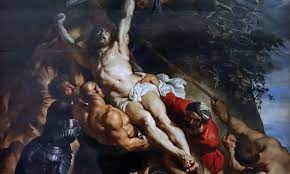
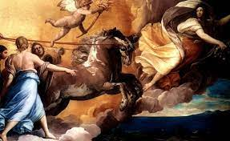

Barok Dönemi
Barok dönemi, 17. yüzyılın ortalarından 18. yüzyılın başlarına kadar süren bir sanat ve kültür dönemidir. Bu dönem, heyecanlı hareketler, net ve kolay yorumlanabilir detaylar kullanarak dramatizmi, gerilimi, coşkuyu ve ihtişamı sanatta, müzikte ve mimaride ifade eden bir sanat tarzıdır.
Barok Sanatının Özellikleri
- Gerçekçilik ve Dramatizm: Sanat eserleri, duygusal etkiler ve dramatik anlatım üzerine odaklanarak gerçekçilikle yoğrulmuştur.
- Karmaşık Kompozisyonlar: Tablolar ve heykeller, karmaşık düzenlemeler ve detaylarla dikkat çeker.
- Aydınlatma ve Gölge Kullanımı: Güçlü ışık-gölge efektleri, eserlere derinlik ve vurgu katmıştır.
- Duygusal Yoğunluk: Sanat eserleri, içsel duyguları ve tutkuları güçlü bir şekilde ifade eder.
- Relief Etkisi Yaratan Süslemeler: Heykellerde ve mimaride yüksek kabartma ve süslemelerle detaylar ön plana çıkar.
Barok Sanatında Kullanılan Temel Temalar
| Temalar | Açıklama | Örnek |
|---|---|---|
| Relijiyon | Çoğu eser dini temaları işler. Barok dönemi, Katolik Kilisesi'nin güçlü bir destekçisiydi ve bu nedenle dini temalar ön plandaydı. |  |
| Mitoloji | Mitolojik hikayeler ve karakterler sıkça resmedilir. Antik Yunan ve Roma mitolojisi, sanatçılar için ilham kaynağı olmuştur. |  |
| Portreler | Ünlü kişilerin portreleri sıkça çizilir. Soylular, kilise liderleri ve zengin tüccarlar, ressamların popüler portre konularıydı. |  |
Barok Dönemi Sanatçıları ve Eserleri
Barok döneminde etkili olan birkaç sanatçı ve eser:
- Gian Lorenzo Bernini: İtalyan heykeltıraş ve mimar. "Apollo ve Daphne" ve "Extasy of Saint Teresa" gibi eserleriyle tanınır.
- Caravaggio (Michelangelo Merisi): İtalyan ressam. "The Calling of Saint Matthew" ve "Judith Beheading Holofernes" gibi dramatik eserleriyle ünlüdür.
- Rembrandt van Rijn: Hollandalı ressam ve baskı yapımcısı. "The Night Watch" ve "The Anatomy Lesson